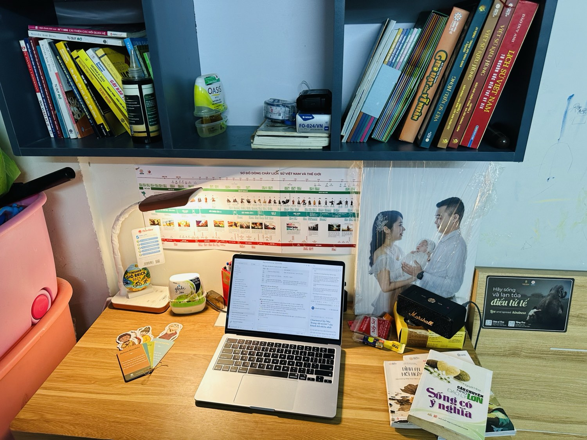
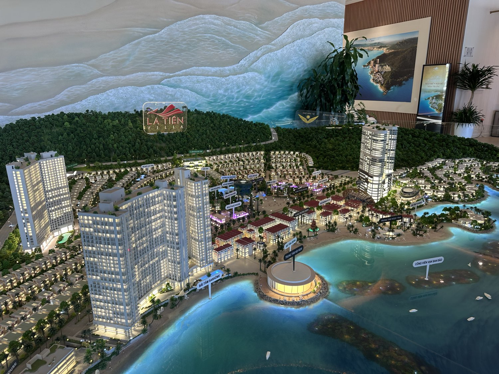
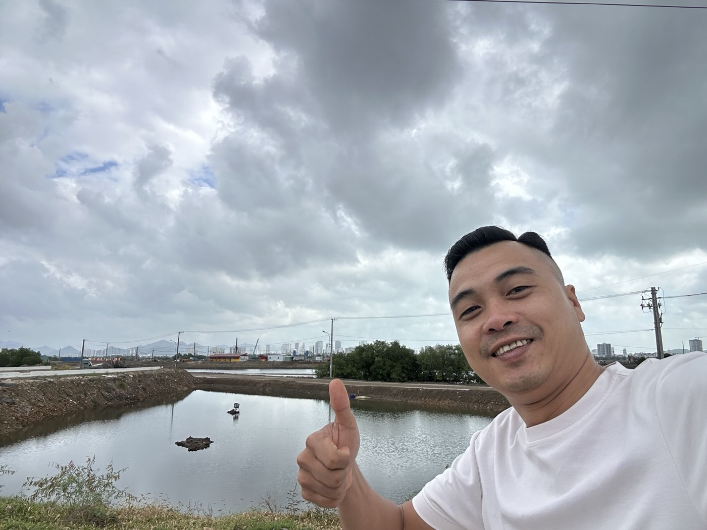
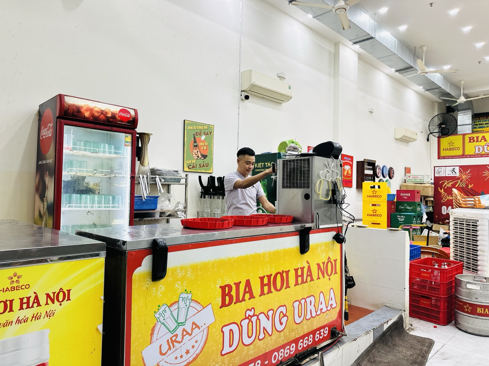
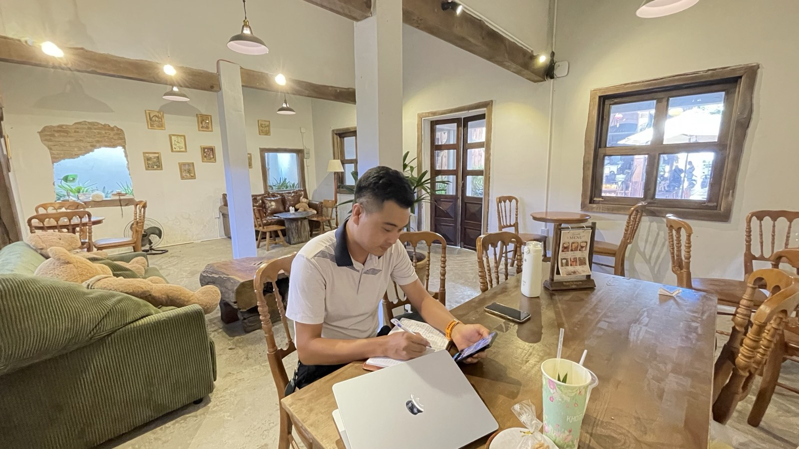
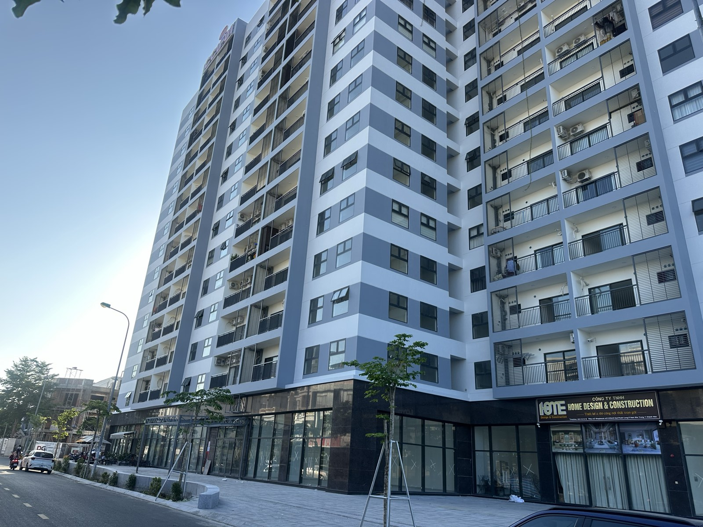
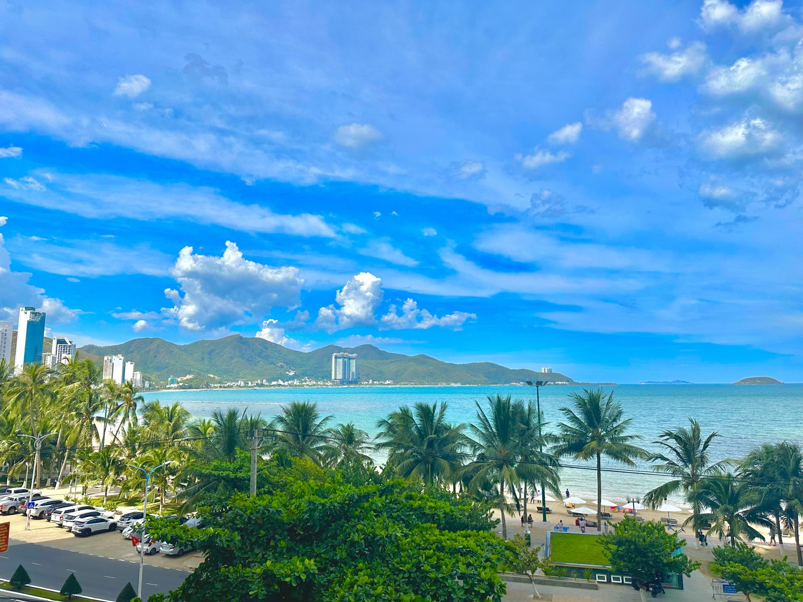
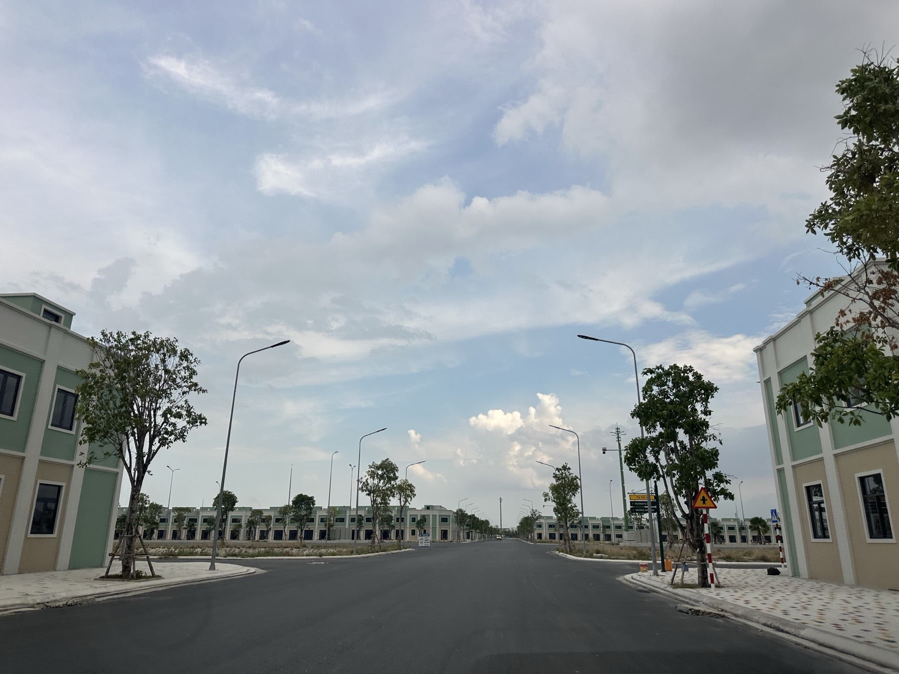

Tủ sách chưa đọc hết — lời thú thật của một người sưu tầm sách
Đừng nhầm giữa "mua kiến thức" và "có kiến thức". Chuyện thật từ cái kệ sách trên bàn làm việc của tôi — và bài học cho cả chuyện kinh doanh.

Cam kết thuê 7%/năm: nghĩa là gì và cần hỏi gì thêm?
7% của cái gì, ai trả, lấy từ nguồn nào, hết cam kết thì sao? 6 câu hỏi tôi luôn hỏi thay khách trước khi họ ký hợp đồng.
42km đi chào hỏi: VnExpress Marathon trên chính con đường tôi bán nhà
Tôi không chạy để phá kỷ lục — tôi chạy fun run, 5 giờ 35 phút, và gần như chào hỏi suốt quãng đường. Chuyện sáng 9/8 tại Nha Trang.

Điểm tin BĐS Khánh Hòa tuần: 19/8 khởi công loạt dự án 20.000 tỷ
7 tin đáng chú ý tuần qua: Cam Lâm chính thức GPMB, hầm Cù Hin chuyển động, NOXH vay 6,5%, VN-Index vượt 1.760 — kèm nhận định cho người mua.

Từ 6 quán còn 1 quán: thu gọn không phải thất bại — là chọn sống sót
Hệ thống từng có 6 cơ sở từ Nha Trang lên Buôn Ma Thuột. Hôm nay còn một quán — và đó là quyết định đúng nhất. 3 bài học cho người kinh doanh đang khó.
Charmora City Nha Trang: tôi trả lời 7 câu khách hỏi nhiều nhất
Sổ gì, giá từ bao nhiêu, bao giờ nhận nhà, Sponge City có thật không — và ai KHÔNG nên mua. Trả lời thẳng từ người bán trực tiếp dự án.

Bảng giá đất 2026 Khánh Hòa: 3 điều cần hiểu trước khi tin "giá nhà nước"
Bảng giá mới tăng 15–40% — nhưng nó không phải giá thị trường. Nó quyết định tiền bạn nộp khi sang tên và tiền bạn nhận nếu bị thu hồi.
Dậy trước 6 giờ sáng: giờ duy nhất không ai đòi hỏi gì mình
Dậy sớm không phải cực hình kỷ luật — đó là giờ dễ chịu nhất ngày. Ba việc xứng đáng với khung giờ đó, và cách bắt đầu bằng đúng 20 phút.

3 câu tôi tự hỏi mỗi ngày — và chúng lọc được những gì
Không app, không khóa học — ba câu hỏi thành câu cửa miệng: lọc sự trì trệ, lọc lòng tham, lọc sự vô nghĩa. Thói quen rẻ nhất mà lãi nhất.

Mua nhà ở xã hội Nha Trang 2026: ai đủ điều kiện, hồ sơ cần gì?
Trần thu nhập đã nới: độc thân 20 triệu, vợ chồng 40 triệu/tháng — nhiều người đủ điều kiện mà chưa từng kiểm tra. Kèm các dự án Khánh Hòa đang triển khai.

Mua căn hộ cho thuê ở Nha Trang: 5 câu hỏi trước khi xuống tiền
Căn hộ dòng tiền là "máy in tiền" với người hỏi đúng câu hỏi. Từ người thuê thật đến bài toán lãi thả nổi — 5 câu lọc thương vụ trước khi ký.

Bia hơi Hà Nội ở Nha Trang: vì sao tôi mang nó vượt 1.300km?
Chuyện thật của DŨNG URAA: từ nhóm kỹ sư rời tập đoàn năm 2022, hệ thống 6 cơ sở, đến quán bia giữ vị quê ở Phước Long hôm nay.

BĐS Nha Trang giữa 2026: hết thời FOMO, đến thời "sợ chọn sai"
Kinh tế tăng 8%, FDI kỷ lục — mà nhà đất vẫn chậm. Giải mã nghịch lý của thị trường và 4 việc người mua khôn đang làm khác đám đông.
35km trail đầu đời ở tuổi 37 — và thói quen đi tìm "lần đầu"
Trong đúng năm ngày tôi có hai lần đầu tiên — một lần trên núi, một lần lúc 3 giờ sáng. Người ta không cũ đi vì tuổi; người ta cũ đi khi ngừng có lần đầu.

Mua đất Cam Lâm: cách tôi lọc lô "an toàn" ngoài ranh thu hồi
Đất an toàn là gì, 4 nhịp sóng giá quanh đại dự án hơn 10.000 ha, và 3 bước kiểm tra tôi luôn làm trước khi khách xuống tiền.

Sống tích cực kiểu người từng vấp ngã: 3 điều tôi giữ mỗi ngày
Từ cú vấp ngã đầu tư 2022 đến vạch đích trail 35km — 3 điều tôi giữ mỗi ngày để sống tích cực thật, không hô khẩu hiệu.
Trước khi xuống tiền mua đất: 5 lớp kiểm tra quy hoạch tôi luôn làm
Từ tra cứu miễn phí vài phút, văn bản đóng dấu của cơ quan nhà nước, đến đối chiếu tận thực địa — quy trình tôi áp dụng cho mọi sản phẩm trước khi đưa đến tay khách hàng.

Vì sao tôi làm nghề môi giới bất động sản?
Tôi không vào nghề vì hào quang thị trường. Tôi vào nghề vì đã từng mất tiền khi đầu tư — và hiểu nhà đầu tư cần gì ở một người đồng hành dám nói thật.